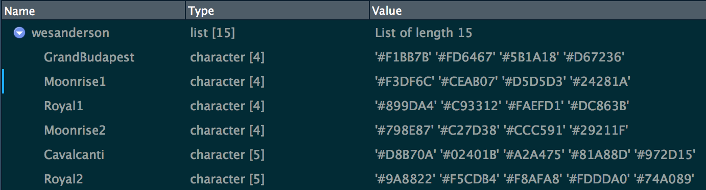

The repurrrsive package provides recursive lists that are handy when teaching or exampling functions such as purrr::map() and the unnest_*() functions in the tidyr package. Datasets are stored as R list, JSON, and XML to provide the full non-rectangular data experience. Enjoy!
Package also includes the main data frame from the gapminder package in 3 different forms: simple data frame (no list-columns), data frame nested by country, and split into a named list of data frames.
Resources that use repurrrsive, where you can much more list wrangling:
- A purrr tutorial: https://jennybc.github.io/purrr-tutorial/
- A tidyr vignette on rectangling
Installation
You can install repurrrsive from CRAN like so:
install.packages("repurrrsive")or from GitHub with:
# install.packages("devtools")
devtools::install_github("jennybc/repurrrsive")Recursive list examples
Game of Thrones POV characters
got_chars is a list with information on the 30 point-of-view characters from the first five books in the Song of Ice and Fire series by George R. R. Martin. Retrieved from An API Of Ice And Fire.
library(repurrrsive)
library(purrr)
(nms <- map_chr(got_chars, "name"))
#> [1] "Theon Greyjoy" "Tyrion Lannister" "Victarion Greyjoy"
#> [4] "Will" "Areo Hotah" "Chett"
#> [7] "Cressen" "Arianne Martell" "Daenerys Targaryen"
#> [10] "Davos Seaworth" "Arya Stark" "Arys Oakheart"
#> [13] "Asha Greyjoy" "Barristan Selmy" "Varamyr"
#> [16] "Brandon Stark" "Brienne of Tarth" "Catelyn Stark"
#> [19] "Cersei Lannister" "Eddard Stark" "Jaime Lannister"
#> [22] "Jon Connington" "Jon Snow" "Aeron Greyjoy"
#> [25] "Kevan Lannister" "Melisandre" "Merrett Frey"
#> [28] "Quentyn Martell" "Samwell Tarly" "Sansa Stark"
map_dfr(got_chars, `[`, c("name", "gender", "culture", "born"))
#> # A tibble: 30 × 4
#> name gender culture born
#> <chr> <chr> <chr> <chr>
#> 1 Theon Greyjoy Male "Ironborn" "In 278 AC or 279 AC, at Pyke"
#> 2 Tyrion Lannister Male "" "In 273 AC, at Casterly Rock"
#> 3 Victarion Greyjoy Male "Ironborn" "In 268 AC or before, at Pyke"
#> 4 Will Male "" ""
#> 5 Areo Hotah Male "Norvoshi" "In 257 AC or before, at Norvos"
#> 6 Chett Male "" "At Hag's Mire"
#> 7 Cressen Male "" "In 219 AC or 220 AC"
#> 8 Arianne Martell Female "Dornish" "In 276 AC, at Sunspear"
#> 9 Daenerys Targaryen Female "Valyrian" "In 284 AC, at Dragonstone"
#> 10 Davos Seaworth Male "Westeros" "In 260 AC or before, at King's Landing"
#> # … with 20 more rowsThe same got_chars data is also present as JSON and XML files. Accessor functions provide the local file path.
got_chars_json()
#> [1] "/private/tmp/Rtmp0w1VJd/temp_libpath170944c487229/repurrrsive/extdata/got_chars.json"
got_chars_xml()
#> [1] "/private/tmp/Rtmp0w1VJd/temp_libpath170944c487229/repurrrsive/extdata/got_chars.xml"Practice bringing data from JSON into an R list.
library(jsonlite)
json <- fromJSON(got_chars_json(), simplifyDataFrame = FALSE)
json[[1]][c("name", "titles", "playedBy")]
#> $name
#> [1] "Theon Greyjoy"
#>
#> $titles
#> [1] "Prince of Winterfell"
#> [2] "Lord of the Iron Islands (by law of the green lands)"
#>
#> $playedBy
#> [1] "Alfie Allen"
identical(got_chars, json)
#> [1] TRUEPractice bringing data into R from XML. You can get it into an R list with xml2::as_list(), but to get a list as nice as those above? That requires a bit more work. Such is XML life.
library(xml2)
xml <- read_xml(got_chars_xml())
xml_child(xml)
#> {xml_node}
#> <elem>
#> [1] <url>https://www.anapioficeandfire.com/api/characters/1022</url>
#> [2] <id>1022</id>
#> [3] <name>Theon Greyjoy</name>
#> [4] <gender>Male</gender>
#> [5] <culture>Ironborn</culture>
#> [6] <born>In 278 AC or 279 AC, at Pyke</born>
#> [7] <died/>
#> [8] <alive>TRUE</alive>
#> [9] <titles>\n <elem>Prince of Winterfell</elem>\n <elem>Lord of the Iron ...
#> [10] <aliases>\n <elem>Prince of Fools</elem>\n <elem>Theon Turncloak</elem ...
#> [11] <father/>
#> [12] <mother/>
#> [13] <spouse/>
#> [14] <allegiances>House Greyjoy of Pyke</allegiances>
#> [15] <books>\n <elem>A Game of Thrones</elem>\n <elem>A Storm of Swords</el ...
#> [16] <povBooks>\n <elem>A Clash of Kings</elem>\n <elem>A Dance with Dragon ...
#> [17] <tvSeries>\n <elem>Season 1</elem>\n <elem>Season 2</elem>\n <elem>Se ...
#> [18] <playedBy>Alfie Allen</playedBy>Star Wars Universe entities
sw_people, sw_films, sw_species, sw_planets, sw_starships and sw_vehicles are interrelated lists about entities in the Star Wars Universe. The data was originally retrieved from the Star Wars API previously available at http://swapi.co using the R package rwars. The Star Wars API appears to have moved to https://pipedream.com/apps/swapi since that time.
library(repurrrsive)
library(purrr)
map_chr(sw_films, "title")
#> [1] "A New Hope" "Attack of the Clones"
#> [3] "The Phantom Menace" "Revenge of the Sith"
#> [5] "Return of the Jedi" "The Empire Strikes Back"
#> [7] "The Force Awakens"Elements that contain URLs provide a way to link the lists together. For example, the films element of each person contains URLs for the films they have appeared in. For example, Luke Skywalker has been in five films.
luke <- sw_people[[1]]
names(luke)
#> [1] "name" "height" "mass" "hair_color" "skin_color"
#> [6] "eye_color" "birth_year" "gender" "homeworld" "films"
#> [11] "species" "vehicles" "starships" "created" "edited"
#> [16] "url"
luke[["films"]]
#> [1] "http://swapi.co/api/films/6/" "http://swapi.co/api/films/3/"
#> [3] "http://swapi.co/api/films/2/" "http://swapi.co/api/films/1/"
#> [5] "http://swapi.co/api/films/7/"These URLs can be looked up in the the sw_films list to find the titles of the films.
# Create a mapping between titles and urls
film_lookup <- map_chr(sw_films, "title") %>%
set_names(map_chr(sw_films, "url"))
# The films Luke is in
film_lookup[luke[["films"]]] %>% unname()
#> [1] "Revenge of the Sith" "Return of the Jedi"
#> [3] "The Empire Strikes Back" "A New Hope"
#> [5] "The Force Awakens"GitHub user and repo data
gh_users and gh_repos are lists with information for 6 GitHub users and up to 30 of each user’s repositories.
GitHub users.
library(repurrrsive)
library(purrr)
map_chr(gh_users, "login")
#> [1] "gaborcsardi" "jennybc" "jtleek" "juliasilge" "leeper"
#> [6] "masalmon"
map_chr(gh_users, 18)
#> [1] "Gábor Csárdi" "Jennifer (Jenny) Bryan" "Jeff L."
#> [4] "Julia Silge" "Thomas J. Leeper" "Maëlle Salmon"
map_dfr(gh_users, `[`, c("login", "name", "id", "location"))
#> # A tibble: 6 × 4
#> login name id location
#> <chr> <chr> <int> <chr>
#> 1 gaborcsardi Gábor Csárdi 660288 Chippenham, UK
#> 2 jennybc Jennifer (Jenny) Bryan 599454 Vancouver, BC, Canada
#> 3 jtleek Jeff L. 1571674 Baltimore,MD
#> 4 juliasilge Julia Silge 12505835 Salt Lake City, UT
#> 5 leeper Thomas J. Leeper 3505428 London, United Kingdom
#> 6 masalmon Maëlle Salmon 8360597 Barcelona, SpainFirst ~30 repos of these users. Peek at some info from first repo for the first user. Get full name of each user’s 11th repo.
str(gh_repos[[1]][[1]][c("full_name", "html_url", "description")])
#> List of 3
#> $ full_name : chr "gaborcsardi/after"
#> $ html_url : chr "https://github.com/gaborcsardi/after"
#> $ description: chr "Run Code in the Background"
map_chr(gh_repos, list(11, "full_name"))
#> [1] "gaborcsardi/debugme"
#> [2] "jennybc/access-r-source"
#> [3] "jtleek/datawomenontwitter"
#> [4] "juliasilge/juliasilge.github.io"
#> [5] "leeper/congressional-district-boundaries"
#> [6] "masalmon/geoparsing_tweets"Want to parse it yourself? Paths to local JSON and XML files.
c(gh_users_json(), gh_repos_json(), gh_users_xml(), gh_repos_xml())
#> [1] "/private/tmp/Rtmp0w1VJd/temp_libpath170944c487229/repurrrsive/extdata/gh_users.json"
#> [2] "/private/tmp/Rtmp0w1VJd/temp_libpath170944c487229/repurrrsive/extdata/gh_repos.json"
#> [3] "/private/tmp/Rtmp0w1VJd/temp_libpath170944c487229/repurrrsive/extdata/gh_users.xml"
#> [4] "/private/tmp/Rtmp0w1VJd/temp_libpath170944c487229/repurrrsive/extdata/gh_repos.xml"Redo this: Get full name of each user’s 11th repo. But using only the XML.
library(xml2)
repo_xml <- read_xml(gh_repos_xml())
repo_names <- map_chr(xml_find_all(repo_xml, "//full_name"), xml_text)
elevenses <-
11 + cumsum(c(0, head(table(gsub("(.*)/.*", "\\1", repo_names)), -1)))
repo_names[elevenses]
#> [1] "gaborcsardi/debugme"
#> [2] "jennybc/access-r-source"
#> [3] "jtleek/datawomenontwitter"
#> [4] "juliasilge/juliasilge.github.io"
#> [5] "leeper/congressional-district-boundaries"
#> [6] "masalmon/geoparsing_tweets"Sharla Gelfand’s music collection
discog holds a list of 155 items, representing a music collection stored in the Discogs database and retrieved via their API. It’s useful for demonstrating capabilities of purrr and tidyr.
library(repurrrsive)
library(purrr)
library(tidyr) # version >= 0.8.3.9000
library(tibble)
library(dplyr)
#>
#> Attaching package: 'dplyr'
#> The following objects are masked from 'package:stats':
#>
#> filter, lag
#> The following objects are masked from 'package:base':
#>
#> intersect, setdiff, setequal, unionHere we get just the album names:
discog %>%
map_chr(c("basic_information", "title")) %>%
head()
#> [1] "Demo" "Observant Com El Mon Es Destrueix"
#> [3] "I" "Oído Absoluto"
#> [5] "A Cat's Cause, No Dogs Problem" "Tashme"Put the discog list into a list-column and use tidyr::hoist() to dig some info out of it.
tibble(disc = discog) %>%
hoist(disc, info = "basic_information") %>%
hoist(info,
title = "title",
year = "year",
label = list("labels", 1, "name"),
artist = list("artists", 1, "name")
) %>%
select(-disc, -info)
#> # A tibble: 155 × 4
#> title year label artist
#> <chr> <int> <chr> <chr>
#> 1 Demo 2015 Tobi Records (2) Mollot
#> 2 Observant Com El Mon Es Destrueix 2013 La Vida Es Un Mus Una B…
#> 3 I 2017 La Vida Es Un Mus S.H.I…
#> 4 Oído Absoluto 2017 La Vida Es Un Mus Rata …
#> 5 A Cat's Cause, No Dogs Problem 2015 Katorga Works Ivy (…
#> 6 Tashme 2019 High Fashion Industries Tashme
#> 7 Demo 2014 Mind Control Records (6) Desgr…
#> 8 Let The Miracles Begin 2015 Not On Label (Phantom Head Se… Phant…
#> 9 Sub Space 2017 Not On Label (Sub Space (2) S… Sub S…
#> 10 Demo 2017 Prescience Tapes Small…
#> # … with 145 more rowswesanderson color palettes
wesanderson is the simplest list, containing color palettes, from the wesanderson package. Here’s a glimpse: one component per palette, each containing a character vector of hex colors. Screenshot is of RStudio’s Object Explorer, i.e. from calling View(wesanderson).

library(repurrrsive)
library(purrr)
wesanderson[1:3]
#> $GrandBudapest
#> [1] "#F1BB7B" "#FD6467" "#5B1A18" "#D67236"
#>
#> $Moonrise1
#> [1] "#F3DF6C" "#CEAB07" "#D5D5D3" "#24281A"
#>
#> $Royal1
#> [1] "#899DA4" "#C93312" "#FAEFD1" "#DC863B"Use wesanderson to demonstrate mapping functions over a list.
map_chr(wesanderson, 1)
#> GrandBudapest Moonrise1 Royal1 Moonrise2 Cavalcanti
#> "#F1BB7B" "#F3DF6C" "#899DA4" "#798E87" "#D8B70A"
#> Royal2 GrandBudapest2 Moonrise3 Chevalier Zissou
#> "#9A8822" "#E6A0C4" "#85D4E3" "#446455" "#3B9AB2"
#> FantasticFox Darjeeling Rushmore BottleRocket Darjeeling2
#> "#DD8D29" "#FF0000" "#E1BD6D" "#A42820" "#ECCBAE"
map_int(wesanderson, length)
#> GrandBudapest Moonrise1 Royal1 Moonrise2 Cavalcanti
#> 4 4 4 4 5
#> Royal2 GrandBudapest2 Moonrise3 Chevalier Zissou
#> 5 4 5 4 5
#> FantasticFox Darjeeling Rushmore BottleRocket Darjeeling2
#> 5 5 5 7 5
map_chr(wesanderson[7:9], paste, collapse = ", ")
#> GrandBudapest2
#> "#E6A0C4, #C6CDF7, #D8A499, #7294D4"
#> Moonrise3
#> "#85D4E3, #F4B5BD, #9C964A, #CDC08C, #FAD77B"
#> Chevalier
#> "#446455, #FDD262, #D3DDDC, #C7B19C"The same wesanderson data is also present as JSON and XML files. Accessor functions provide the local file path.
wesanderson_json()
#> [1] "/private/tmp/Rtmp0w1VJd/temp_libpath170944c487229/repurrrsive/extdata/wesanderson.json"
wesanderson_xml()
#> [1] "/private/tmp/Rtmp0w1VJd/temp_libpath170944c487229/repurrrsive/extdata/wesanderson.xml"Practice bringing data from JSON into an R list.
library(jsonlite)
json <- fromJSON(wesanderson_json())
json$wesanderson[1:3]
#> $GrandBudapest
#> [1] "#F1BB7B" "#FD6467" "#5B1A18" "#D67236"
#>
#> $Moonrise1
#> [1] "#F3DF6C" "#CEAB07" "#D5D5D3" "#24281A"
#>
#> $Royal1
#> [1] "#899DA4" "#C93312" "#FAEFD1" "#DC863B"
identical(wesanderson, json$wesanderson)
#> [1] TRUEPractice bringing data into R from XML. You can get it into an R list with xml2::as_list(), but to get a list as nice as those above? That requires a bit more work. Such is XML life.
library(xml2)
xml <- read_xml(wesanderson_xml())
xml_child(xml)
#> {xml_node}
#> <palette name="GrandBudapest">
#> [1] <hex>#F1BB7B</hex>
#> [2] <hex>#FD6467</hex>
#> [3] <hex>#5B1A18</hex>
#> [4] <hex>#D67236</hex>
as_list(xml_child(xml))
#> $hex
#> $hex[[1]]
#> [1] "#F1BB7B"
#>
#>
#> $hex
#> $hex[[1]]
#> [1] "#FD6467"
#>
#>
#> $hex
#> $hex[[1]]
#> [1] "#5B1A18"
#>
#>
#> $hex
#> $hex[[1]]
#> [1] "#D67236"
#>
#>
#> attr(,"name")
#> [1] "GrandBudapest"Nested and split data frame examples
Use the Gapminder data in various forms to practice different styles of grouped computation.
library(dplyr)
library(purrr)
library(tibble)
## group_by() + summarize()
gap_simple %>%
group_by(country) %>%
summarize(cor = cor(lifeExp, year))
#> # A tibble: 142 × 2
#> country cor
#> <fct> <dbl>
#> 1 Afghanistan 0.974
#> 2 Albania 0.954
#> 3 Algeria 0.993
#> 4 Angola 0.942
#> 5 Argentina 0.998
#> 6 Australia 0.990
#> 7 Austria 0.996
#> 8 Bahrain 0.983
#> 9 Bangladesh 0.995
#> 10 Belgium 0.997
#> # … with 132 more rows
## nest() + map_*() inside mutate()
gap_nested %>%
mutate(cor = data %>% map_dbl(~ cor(.x$lifeExp, .x$year)))
#> # A tibble: 142 × 4
#> country continent data cor
#> <fct> <fct> <list> <dbl>
#> 1 Afghanistan Asia <tibble [12 × 4]> 0.974
#> 2 Albania Europe <tibble [12 × 4]> 0.954
#> 3 Algeria Africa <tibble [12 × 4]> 0.993
#> 4 Angola Africa <tibble [12 × 4]> 0.942
#> 5 Argentina Americas <tibble [12 × 4]> 0.998
#> 6 Australia Oceania <tibble [12 × 4]> 0.990
#> 7 Austria Europe <tibble [12 × 4]> 0.996
#> 8 Bahrain Asia <tibble [12 × 4]> 0.983
#> 9 Bangladesh Asia <tibble [12 × 4]> 0.995
#> 10 Belgium Europe <tibble [12 × 4]> 0.997
#> # … with 132 more rows
## split + map_*()
gap_split %>%
map_dbl(~ cor(.x$lifeExp, .x$year)) %>%
head()
#> Afghanistan Albania Algeria Angola Argentina Australia
#> 0.9735051 0.9542420 0.9925307 0.9422392 0.9977816 0.9897716
## split + map_*() + tibble::enframe()
gap_split %>%
map_dbl(~ cor(.x$lifeExp, .x$year)) %>%
enframe()
#> # A tibble: 142 × 2
#> name value
#> <chr> <dbl>
#> 1 Afghanistan 0.974
#> 2 Albania 0.954
#> 3 Algeria 0.993
#> 4 Angola 0.942
#> 5 Argentina 0.998
#> 6 Australia 0.990
#> 7 Austria 0.996
#> 8 Bahrain 0.983
#> 9 Bangladesh 0.995
#> 10 Belgium 0.997
#> # … with 132 more rows